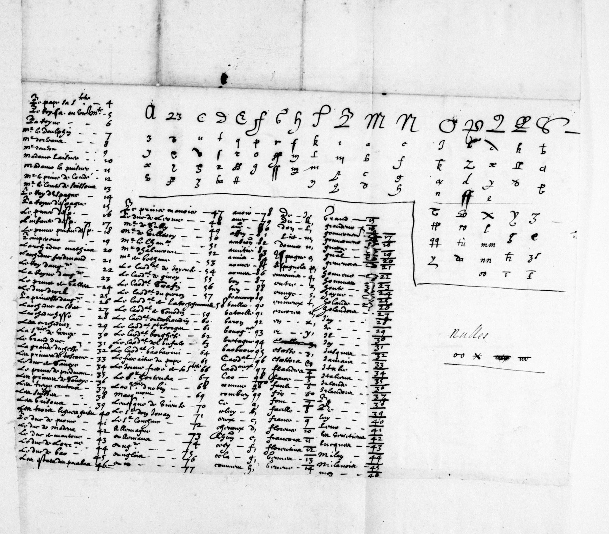

Primer dosier · Correspondencia diplomática
María de Médici: lo que ocultan dos cartas a Roma
En el otoño de 1610, unos pasajes cifrados interrumpen el francés de dos cartas a Savary de Brèves. Una tabla hallada en la BnF permite proponer, hasta donde sabemos, un primer descifrado. Revela juicios políticos; algunos caracteres siguen siendo probables pero no confirmados.
Síntesis: ¿en qué punto está el descifrado?
Los dos pasajes cuentan ya con una lectura continua, reforzada por las relecturas y por la respuesta de Satoshi Tomokiyo. Este confirma que nuestra imagen del Français 3462 es la de la clave Enrique IV–Brèves que él conocía; la signatura «3642» era una errata. Corrobora 72~→QUE, 79~→RE, 86~→SE y 90~→TION.[7]
El sentido general nos parece muy verosímil. Hasta donde sabemos, se trata de un primer descifrado de estos pasajes; algunos caracteres siguen siendo probables pero no confirmados. Las reservas se concentran sobre todo en las B de «ambition» y de «foiblesse» y en la terminación de «acompagnez». La lectura numérica sale reforzada. Aplicada a las cartas de María, la tabla de Enrique IV explica lo esencial: a nuestro juicio, la regente empleaba una clave muy cercana, con algunas variantes que explicarían los signos aún inciertos.
Octubre de 2026: confirmación. Satoshi Tomokiyo clasifica ahora la cifra de María de Médici como resuelta en su lista de cifrados no resueltos, y menciona nuestra lectura del 17 de octubre.[9] George Lasry, que en 2021 había descifrado la carta de Enrique IV con Norbert Biermann y Satoshi Tomokiyo, rehízo por su parte la lectura del pasaje del 10 de noviembre; su informe, publicado por Satoshi Tomokiyo el 21 de octubre de 2026, acredita nuestra lectura.[9] Confirma los signos que dejábamos inciertos en «recognoissant» y «sentant», lee el signo 4 como «Sa Sainteté», valor de la clave de Enrique IV, donde nosotros habíamos retenido «le pape», y añade a la clave un signo para la N en forma de «e». Adoptamos estas lecturas, así como la suya del texto en claro que sigue («ne les pressera»). El pasaje del 15 de septiembre no está cubierto por ese informe. Por último, Daniel Bourdeau clasifica ahora los dos pasajes como leídos en su catálogo y atribuye su descifrado, con la clave del Français 3462, a nuestra lectura.[10] Ver los puntos aún abiertos.
1610: una regencia y unas alianzas frágiles
Enrique IV es asesinado el 14 de mayo de 1610. Le sucede Luis XIII, todavía niño; su madre, María de Médici, ejerce la regencia. Las cartas estudiadas se escriben, pues, pocos meses después de un cambio brusco de gobierno, y no en la continuidad tranquila de un reinado asentado. Esta cronología está establecida con independencia del descifrado.[4]
En la primavera de 1610, los acuerdos de Bruzolo acercan a Enrique IV y a Carlos Manuel I contra España. La muerte del rey compromete el proyecto; la regencia se aproxima a Madrid y deja expuesta a Saboya. Este contexto procede de los trabajos históricos, no del descifrado.[5]
Roma es otro escenario de negociación. Brèves representa allí a la monarquía francesa: una carta de la regente le transmite a la vez una posición política y una apreciación de lo que es posible obtener. En la carta de noviembre, las palabras en claro ya hablan del desarme y del riesgo de una negativa. El pasaje cifrado precisaría el juicio sobre los actores. El desplazamiento es importante: el asunto general era visible; la reserva diplomática permanecía oculta.
| Hito | Lo que está establecido |
|---|---|
| Primavera de 1610 | Acercamiento franco-saboyano en Bruzolo, antes de la muerte de Enrique IV [5]. |
| 14 de mayo de 1610 | Asesinato de Enrique IV; le sucede Luis XIII y María de Médici ejerce la regencia [4]. |
| 15 de septiembre de 1610 | Primera carta estudiada, del manuscrito Français 3789 [1]. |
| 10 de noviembre de 1610 | Segunda carta estudiada, en el mismo manuscrito [2]. |
La descripción del manuscrito inventaría efectivamente las dos piezas de María, n.º 11 y 12, dentro de un conjunto que comprende también cartas de Enrique IV, de Luis XIII, de Brulart y del duque de Saboya. Esta vecindad documental es útil para identificar a los corresponsales; no demuestra que todas las piezas utilicen la misma clave.[6]

Dos cartas, una cuestión diplomática
Las dos piezas se conservan en el manuscrito Français 3789 de la Bibliothèque nationale de France. Las dirige María de Médici, entonces regente, a François Savary de Brèves, embajador en Roma. La primera está fechada el 15 de septiembre de 1610 y la segunda el 10 de noviembre; los pasajes estudiados se encuentran en los folios 17r y 19r.[1][2]
La cifra no cubre toda la carta. Se inserta en frases francesas ya legibles. Esta vecindad es valiosa: permite buscar un enlace gramatical y un sentido. Impone también una disciplina: un enlace seductor no convierte un signo ambiguo en letra segura.
El dosier sitúa estos intercambios en los asuntos de Saboya: el viaje del hijo del duque de Saboya a España para la carta de septiembre, y las conversaciones sobre el desarme para la de noviembre. La lectura propuesta debe juzgarse en ese marco documental, sin pretender que cuente por sí sola toda la política francesa en Italia.

15 de septiembre: malicia, ambición y debilidad
La propuesta de lectura de los dos segmentos cifrados conserva la ortografía obtenida. Las palabras con subrayado punteado dependen sobre todo de elecciones de glifos que hay que controlar; los elementos en azul son los valores numéricos corroborados por Satoshi.
ce sera trop manifester leurs malice et am[b?]ition que
acompagne[z?] d’imprudence et [de?] foi[b?]lesse
El pasaje enlazaría así con las palabras en claro: «[…] si avec cela ilz y apportent encore de la difficulté, ce sera trop manifester leurs malice et am[b?]ition que j’estime, s’il en falloit venir à l’effet, devoir estre acompagne[z?] d’imprudence et [de?] foi[b?]lesse, selon la constitution présente de leurs affaires.»
Lectura modernizada, editorial. […] si además ponen dificultades, será manifestar demasiado su malicia y su ambición, que a mi juicio, si hubiera que pasar a los hechos, irían acompañadas de imprudencia y de debilidad, según el estado presente de sus asuntos.
La modernización restablece concordancias y añade puntuación; no representa el manuscrito letra por letra. La palabra «ambition» depende especialmente de la lectura de la b tachada, de la m pequeña elegida ahora como I y del sufijo 90~ → tion. Estas dependencias siguen visibles en la alineación.
10 de noviembre: el papa y el desarme
La segunda carta propondría el pasaje siguiente:
que Sa Sainteté recognoissant leurs arogance et sentant sa timidite
El enlace conservado en el dosier es: «Aussi vois-je bien que Sa Sainteté recognoissant leurs arogance et sentant sa timidite ne les pressera jusques à l’extrémité du désarmement, pour recevoir enfin la honte d’un refus absolu […]».
Sería menos el anuncio de una decisión que la apreciación de una relación de fuerzas: el papa, consciente de su propia timidez, no llegará a exigir a los españoles un desarme completo que le valdría una negativa humillante. «Recognoissant» y «sentant», durante mucho tiempo las palabras más frágiles, quedan confirmadas por la lectura independiente de George Lasry, que lee también el signo 4 como «Sa Sainteté».[9]
Examinar la carta del 10 de noviembre →
Lo que aporta la última relectura
Las comparaciones de Brice permitieron distinguir los homófonos, conservar la ligadura U3 y reforzar varias secuencias, en particular «d’imprudence» y «timidite». La valoración favorable de la relectura de conjunto no convierte los antiguos «posible» o «indecidible» en elecciones seguras para cada signo.
La respuesta de Satoshi aporta un apoyo adicional a los cuatro valores numéricos, antes inferidos del contexto. Afecta a seis ocurrencias. El prefijo 79~ → re ya no depende, pues, solo de nuestra elección de la palabra «recognoissant»; la C/B y las dos S de esa palabra quedan por examinar. Satoshi da 41 → leur, mientras que la relectura había retenido «leurs»: esta diferencia de terminación sigue visible.
Los caracteres entre corchetes siguen siendo propuestas. El azul señala los valores corroborados por Satoshi, cuya aplicación a la clave de María sigue siendo hipotética. Esta presentación mantiene una lectura continua sin borrar las reservas localizadas. Entender los tres niveles de verificación.
La clave recuperada: un documento de la BnF
El punto de apoyo material es la vista 112 del manuscrito Français 3462, digitalizado en Gallica con el identificador btv1b9058227h. En el PDF parcial enviado por Brice, es la página 26. El número de vista y el número de página del archivo no son, por tanto, intercambiables. La imagen HD proporcionada por Brice permite examinar los pequeños homófonos que eran difíciles de distinguir en el primer PDF.[3]

No es un alfabeto de sustitución simple. Una letra en claro puede tener varios signos cifrados: son los homófonos. La tabla da también formas para sílabas o palabras, así como entradas de nomenclátor. Un mismo mensaje mezcla, pues, varios niveles. Un signo puede dar una letra, otro un grupo como «ce» o «en», un número una expresión como «le pape».
Los cotejos propuestos incluyen a, → ce, x, → en, y, → et y 4 → Sa Sainteté. Explican por qué una coma no basta para separar palabras. Las formas gráficas son esenciales: la «d» de una transcripción somera puede encubrir signos distintos. El Método muestra cómo se conservan estas distinciones.
Satoshi confirma la imagen de esta tabla para Enrique IV–Brèves. La aplicación exacta a las cartas de María queda por verificar. Cuatro valores ya corroborados →.
La tabla ya era conocida por los trabajos sobre la carta de Enrique IV a Brèves, descifrada en 2021 por George Lasry con la ayuda de Norbert Biermann y de Satoshi Tomokiyo. Nuestra investigación recuperó su signatura correcta y la aplicó a las dos cartas de María: explica lo esencial, lo que indica una clave muy cercana, con algunas variantes. Lo inédito que reivindicamos, hasta donde sabemos, concierne a estos pasajes de María.[7]
Cómo avanzó la investigación
13–14 de octubre: encontrar el documento correcto y luego los signos correctos
La investigación arranca con dos pasajes breves, señalados en trabajos anteriores. Una pista conduce a una carta más larga de Enrique IV a Brèves, a la que podría aplicarse una clave. Un primer lote de imágenes no muestra la carta esperada: hay que distinguir el documento catalogado, los folios y las vistas recibidas, sin tomar un número parecido por una identificación.
Las primeras transcripciones separan las letras simples, los signos tachados, las formas dobles, las palabras-código con coma y los números. Las relecturas de Brice desplazan varias fronteras y distinguen formas que la primera lectura había confundido. La búsqueda de la clave no puede compensar una transcripción que borra esas diferencias.
15 de octubre: la colección de claves y luego la alta definición
La pista bibliográfica inicial mencionaba «Français 3642». La investigación se dirige al Français 3462, una colección de tablas de cifra. El PDF proporcionado por Brice permite localizar varias tablas próximas; la página 26 presenta los cotejos buscados. Después llega la vista HD 112. Satoshi confirma ahora la identidad de esta imagen y la errata «3642»; esta identificación no demuestra por sí sola la aplicación exacta de la clave a María.
Sin embargo, el primer vaciado de la tabla no produce un francés continuo. Las confusiones entre homófonos, signos tachados y formas próximas siguen siendo demasiado numerosas. Ensayos automáticos y palabras probables hacen aparecer fragmentos; su mejor puntuación no es una prueba. En particular, elegir una letra distinta en cada ocurrencia ambigua corre el riesgo de fabricar una coherencia que el manuscrito no garantiza.
16 de octubre: hacer verificable cada decisión
La revisión C10 vuelve a una alineación manual sin modelo de lengua. Separa los homófonos mediante identificadores visuales, documenta la fusión tu y suprime la reducción de los números con raya superior a los números simples. Esta etapa se completa con las relecturas de Brice y con la confrontación de los valores con la respuesta de Satoshi. El resultado es una lectura continua propuesta, no la desaparición de las dificultades anteriores.
Ver el balance de las pistas y de los ensayos →
17 de octubre: confrontar los valores con la respuesta de Satoshi
El 17 de octubre, la respuesta de Satoshi confirma la imagen y corrobora cuatro valores numéricos. La lectura continua se consolida; las elecciones de signos aún abiertas siguen visibles.
Lo que cambió en la lectura
El desbloqueo no procede de un nuevo programa de resolución que produzca un texto francés. La revisión C10 reconstruye una alineación manual, sin modelo de lengua. Distingue signos que las transcripciones anteriores asimilaban con demasiada rapidez y corrige un comportamiento del programa que borraba las rayas superiores.
Un ejemplo es decisivo: los dos antiguos segmentos t y u de una línea se reúnen en un solo glifo, U3. La secuencia D–I–M–P–R–U–D–EN–CE se convierte en «d’imprudence». Otra distinción: un número con raya superior no vale automáticamente lo mismo que el número simple. Las antiguas salidas «Concini» y «avec» para ciertas ocurrencias ya no podían conservarse, pues, como lecturas adquiridas.
El Método expone los demás cambios, los cuatro valores ya corroborados y lo que los controles establecen realmente.
Lo que esta lectura aporta a la historia
En septiembre, las palabras propuestas «malice», «ambition», «imprudence» y «foiblesse» hacen explícito un juicio severo sobre las exigencias y los medios de los interlocutores saboyanos. En el enlace con las partes en claro, no se trata solo de transmitir una posición: la regencia evalúa la dificultad que plantean y el riesgo de pasar de las intenciones a los hechos.
En noviembre, la lectura pone el acento en los límites de la presión diplomática. En las negociaciones de desarme, el papa no presionará a los españoles hasta una exigencia abocada a la negativa, que lo expondría a una humillación. El pasaje propuesto completa así las palabras ya en claro sobre el desarme y la negativa absoluta. Estas palabras quedan ahora confirmadas por la lectura independiente de George Lasry.
Estas dos cartas dan acceso, pues, a apreciaciones de la regencia, expresadas para su embajador en Roma. La lectura explica las cinco líneas de forma continua; el control signo por signo debe aún levantar las últimas reservas. La coherencia histórica es un apoyo para la interpretación, no una prueba autónoma de la cifra.